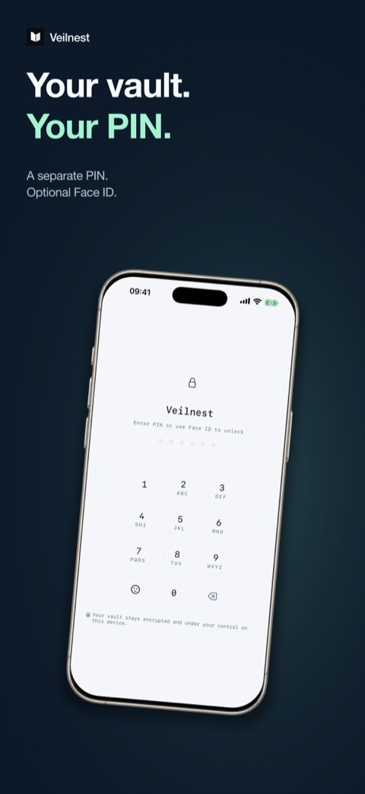
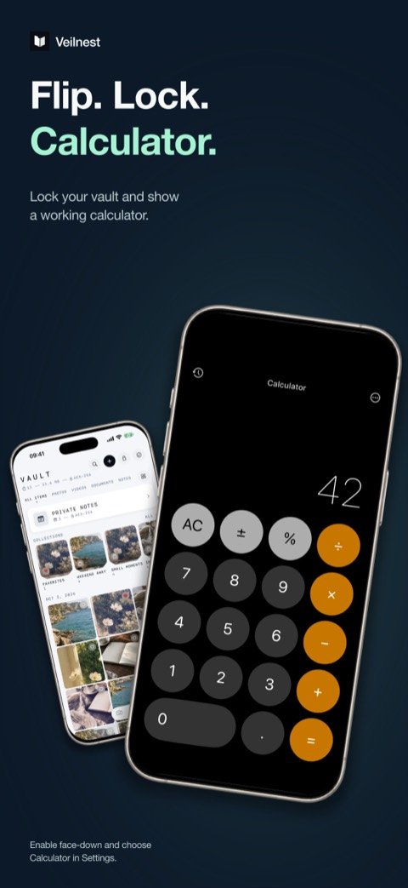

How to hide photos on iPhone
Your iPhone already has a free way to hide photos: the Hidden album in Photos. For many people it is enough. This guide shows how to use it, where it stops helping, and when a separate vault app with its own PIN is worth considering.
1. Hide photos with the built-in Hidden album
Hidden photos move to the Hidden album. They stop appearing in your Library, in other albums and in the Photos widget on your Home Screen.
Hide a photo or video
- Open Photos and open the photo or video. To hide several, tap Select and choose them.
- Tap the More button (•••).
- Tap Hide and confirm.
Find and unhide them
- In Photos, go to Collections and tap Hidden under Utilities.
- Tap View Album and unlock with Face ID, Touch ID or your passcode. On iOS 16 and later the album is locked by default.
- To unhide, select the item, tap More, then Unhide.
Hide the Hidden album itself
Go to Settings → Apps → Photos and turn off Show Hidden Album. The album no longer appears in Photos until you turn the setting back on.
Menu names can shift slightly between iOS versions. Apple keeps the current steps in Hide photos with the Hidden album.
2. What the Hidden album does not do
- It opens with your iPhone passcode. Anyone who knows your device passcode, such as a partner, child or friend you once told, can open it.
- It stays inside your photo library. With iCloud Photos on, hidden items stay hidden on your other devices, but they remain part of the same library and account.
- New photos land in your Library first. A photo you take with the Camera app appears in Recents until you hide it.
- It cannot disguise itself. There is no cover screen or second, decoy set of photos.
None of this makes the Hidden album bad. It is built in, free and synced. It is designed to keep photos out of casual view, not to keep them from someone who knows your passcode.
3. Use a private vault with its own PIN
A vault app keeps photos in a separate space that does not open with your device passcode. Veilnest is the one I make, so I will be specific about what it does and does not do.


- Install Veilnest and choose a six-digit PIN. Face ID or Touch ID is optional. No account is required.
- Import from Photos or Files. Import makes a copy, so the original stays in Photos until you delete it there. If you delete it, also check Recently Deleted.
- Capture directly with the in-app camera, so new photos and videos skip your camera roll.
- Optional cover: in Settings, enable Panic Protection, choose Calculator and turn on face-down or shake. While the vault is open, that gesture locks it and shows a working calculator.
Know the trade-offs. Vault content stays on your iPhone. There is no automatic cloud sync and no service that can recover your PIN. If you lose the device, delete the app or lose access, the content can be gone for good, so export a separate copy of anything you cannot afford to lose. The free version holds a limited number of items; Pro adds more storage and features such as a separate decoy vault with its own PIN.
Veilnest is a private photo and video vault for iPhone.
Hidden album vs. a private vault
| Hidden album | Veilnest | |
|---|---|---|
| Price | Free, built in | Free with an item limit; Pro is paid |
| Unlocks with | Face ID, Touch ID or iPhone passcode | Its own six-digit PIN, optional Face ID or Touch ID |
| New photos | Land in Library, then you hide them | In-app camera saves straight to the vault |
| Cloud | Syncs with iCloud Photos | On device only, no automatic cloud sync |
| Disguise | Can hide the album from Photos | Optional working calculator cover |
Questions
Does hiding a photo delete it?
No. In Photos, hiding only moves it to the Hidden album. In Veilnest, importing copies it; the original stays in Photos until you delete it.
Can someone see hidden photos on my other devices?
With iCloud Photos, photos hidden on one device are hidden on your other devices too, and the Hidden album there opens with that device's authentication.
Is the calculator in Veilnest a PIN pad?
No. The calculator cover is a real calculator. Typing your PIN into it does not open the vault; you leave the cover and unlock with your PIN or Face ID.
Where can I get help?
See Veilnest support and Veilnest privacy, or email khanhvu.dev@gmail.com.